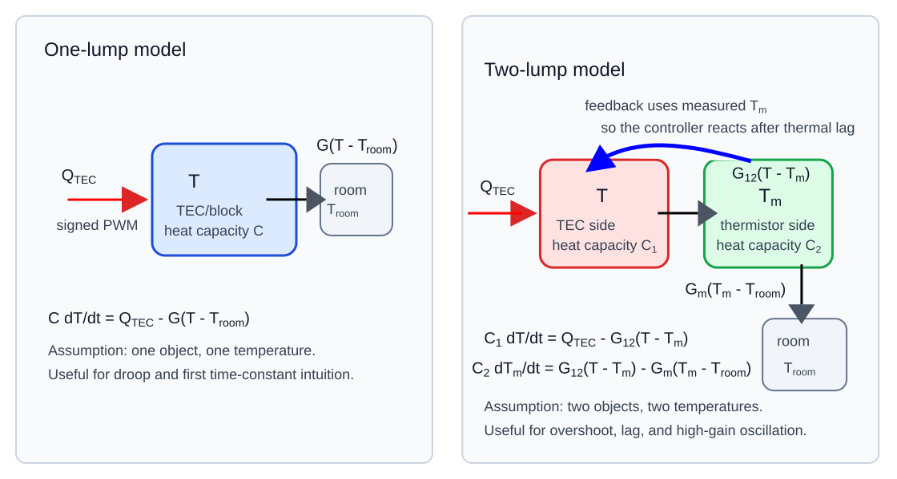

Lab 7 Assignment: Process Model And Python Simulation¶
Introductory Material¶
Purpose¶
Lab 7 is the first modeling lab after you have built enough of the instrument to measure temperature, drive the TEC, and see feedback behavior. The goal is to connect three things:
- the physical TEC/block/thermistor system,
- the feedback-control equations,
- a Python simulation GUI that lets you change model parameters and watch the predicted temperature response.
This lab is not about perfect prediction. It is about learning how a simple model can explain droop, overshoot, lag, and the onset of instability.
Class Theme¶
Model The Process Before You Trust The Controller
The "process" is the part of the feedback loop that the controller is trying to control: the TEC, aluminum block, thermistor, heat loss to the room, and thermal lag between where heat enters and where temperature is measured.
At A Glance¶
Before class, spend your time in this order:
- 45-60 min: Read Lienhard Chapter 1 with emphasis on energy balance, heat flux, conduction, thermal resistance, heat capacity, and lumped models. Read through p. 28. Skip most of the last section on radiation.
- 30-45 min: Prepare Problems 1.3 and 1.8 for possible board work.
- 10-15 min: Skim Examples 1.1, 1.2, and 1.5 for worked-modeling patterns.
- 15-20 min: Run the Python demo and GUI once so class time can focus on interpretation instead of setup.
- 15-20 min: Copy and annotate the three model equations; complete Theory Assignment 1 and begin Theory Assignment 2 if time permits.
During class, the approximate schedule for one 170-minute meeting is:
- 0-20 min: Opening discussion and board work on Lienhard Problems 1.3 and 1.8.
- 20-40 min: Connect the board work to the Lab 7 model equations and the one-lump/two-lump diagram.
- 40-60 min: Run the manual model and identify the physical meaning of each term and control.
- 60-85 min: Run the one-lumped-temperature proportional model and measure droop
as
Kpchanges. - 85-115 min: Run the two-lumped-temperature thermal-mass model and find cases with lag, overshoot, or oscillation.
- 115-140 min: Complete Theory Assignment 2 in groups and connect the two-lump equations to thermistor placement.
- 140-160 min: Make one small code modification and confirm that it changes something visible or understandable.
- 160-170 min: Wrap up: what the model explains, what it leaves out, and why the long-rod experiment will require a spatial model.
Vocabulary¶
- Process: the physical system being controlled. Here, the process is the TEC/block/thermistor thermal system.
- State variable: a number that describes the current state of the model, such as temperature.
- Lumped model: a model that treats an extended object as if it the entire object is at the same temperature. The lump can be viewed as a point object of finite thermal mass.
- Thermal mass: is synomonous with heat capacity. A larger thermal mass changes temperature more slowly.
- Thermal lag: delay between changing the actuator and observing the measured temperature response.
- Droop: steady-state error in proportional-only control.
- Saturation: the actuator command reaches its limit, such as PWM 255. This could be a physical or software imposed limit.
- Residual: measured data minus model prediction.
Model Equations¶
The Python GUI shows three models.
Manual Drive¶
C dT/dt = G_room*(T_room - T) + Q_max*(PWM/255)*HC
The units of this equation are Watts - energy/time. Check that each term has these units. Here T is the TEC/block temperature in °C, T_room is room temperature in °C,
Tm is the measured temperature in °C, C is the heat capacity of the lump in
J/°C, G_room is the thermal conductance to the room in W/°C, Q_max is the
approximate heat flow supplied by the TEC at full PWM in W, PWM is an Arduino
PWM command from 0 to 255, and HC is +1 for heat or -1 for cool. The first
term represents heat transfer between the block and the room. The second term
represents the heat transferred to the block by the TEC.
An equivalent form, after dividing by C, is:
dT/dt = k_room*(T_room - T) + beta_tec*(PWM/255)*HC
where k_room = G_room/C has units of 1/s and beta_tec = Q_max/C has units of
°C/s.
Proportional Control¶
error = T_set - T
PWM = min(Kp*abs(error), 255)
HC = sign(error)
C dT/dt = G_room*(T_room - T) + Q_max*(PWM/255)*HC
This model turns the temperature error into a PWM command. The larger Kp is,
the more strongly the controller reacts to error. If error is measured in °C,
then Kp has units of PWM counts per °C. The min(...) function represents
actuator saturation: the Arduino cannot command a PWM value larger than 255.
Proportional Control With Measured Thermal Mass¶
error = T_set - Tm
PWM = min(Kp*abs(error), 255)
HC = sign(error)
C1 dT/dt = Q_max*(PWM/255)*HC - G12*(T - Tm)
C2 dTm/dt = G12*(T - Tm) - Gm*(Tm - T_room)
This is the most important model for today. The controller responds to Tm, the
measured thermistor/block temperature, but the TEC-side temperature T can move
first. This lag can produce overshoot and oscillation. Here C1 and C2 are
heat capacities in J/°C, G12 is the thermal conductance between the TEC-side
lump and the measured lump in W/°C, and Gm is the conductance from the measured
lump to room air in W/°C.
After dividing by the heat capacities, the coupling terms become rate constants:
dT/dt = beta_tec*(PWM/255)*HC - k12*(T - Tm)
dTm/dt = k21*(T - Tm) - km*(Tm - T_room)
where beta_tec = Q_max/C1, k12 = G12/C1, k21 = G12/C2, and km = Gm/C2.
All of these rate constants have units of 1/s, except beta_tec, which has
units of °C/s.
The Python GUI uses a compact teaching version of this two-lump idea:
error = T_set - Tm
PWM = min(Kp*abs(error), 255)
dT/dt = h*(T_room - T) + actuator
dTm/dt = mass^-1*(T - Tm) + h*(T_room - Tm)
Abbreviated stability theory: near equilibrium, before PWM saturation, let
m = mass^-1. The linearized two-lump model has characteristic equation:
s^2 + alpha*s + beta = 0
alpha = m + 2*h
beta = h*(m + h) + m*Kp
The response is underdamped when D = alpha^2 - 4*beta is negative. For
positive m, this reduces to Kp > m/4. The heat-loss term h makes the real
part of the roots more negative, so it damps the oscillation even though it
cancels out of this simple complex-root threshold. The full derivation is in
two_lump_stability_analysis.pdf.

Course-specific lumped-model diagram. The thermal-resistance/electrical-circuit analogy is introduced in Lienhard, A Heat Transfer Textbook, Section 2.3; see especially Figures 2.8 and 2.12 for the textbook version of the resistance analogy.
Thermal Transport Theory Assignments¶
This part of the course uses lumped thermal models. A lumped model assumes that one object, such as the TEC/block assembly, can be described by one temperature. This is an approximation. It is useful before we move to the long rod, where temperature depends on position.
Theory Assignment 1: One Lumped Temperature¶
Start from an energy balance:
rate of change of thermal energy = heat added by TEC - heat lost to room
Use:
C dT/dt = Q_tec - G*(T - T_room)
where:
Cis the heat capacity of the object in J/°C,Gis the thermal conductance to the room in W/°C,Q_tecis the heat flow supplied by the TEC in W,Tis the object's temperature in °C,T_roomis the room temperature in °C.
Divide by C:
dT/dt = -(T - T_room)/tau + A*signed_PWM
where:
tau = C/G
and A is the conversion between signed PWM and heating/cooling rate. The time
constant tau has units of seconds. If signed_PWM is an Arduino PWM count
between -255 and +255, then A has units of °C/(s PWM count).
Do this before class:
- Show the algebra that converts
C dT/dt = Q_tec - G*(T - T_room)into the simplified model above. - Explain in words what
taumeans. - Predict what happens when
tauis large. - Predict what happens when
Gis large. - Find the steady-state temperature for a constant
signed_PWM.
Theory Assignment 2: Two Lumped Temperatures¶
The one-temperature model assumes that the measured temperature instantly equals the actuator-side temperature. The next model separates them:
T = actuator-side TEC/block temperature
Tm = measured thermistor/block temperature
A simple two-temperature model is:
C1 dT/dt = Q_tec - G12*(T - Tm)
C2 dTm/dt = G12*(T - Tm) - Gm*(Tm - T_room)
Here C1 and C2 are heat capacities in J/°C, G12 and Gm are thermal
conductances in W/°C, and each term has units of W. The left side is a rate of
thermal-energy change. The right side is the sum of heat flows into and out of
each lump.
Do this before class:
- Identify which term transfers heat from the TEC side to the measured thermistor/block side.
- Identify which term describes heat loss from the measured block to room air.
- Explain why
Tmcan lag behindT. - Explain why a controller that uses
Tmmay react too late. - Compare this model to the simplified rate-constant form:
text
dTm/dt = k21*(T - Tm) - km*(Tm - T_room)
Later In The Course: Differential Equations In Space¶
The long-rod experiment cannot be described by a single temperature. It will need a temperature field. In its simplest form as a long, thin rod, temperature depends only on lonngitudinal position and is independent of radius.
For the rod we will move toward diffusion equations of the form:
and, for a rod exchanging heat with the room from its sides, a term that pulls the rod toward room temperature:
In these equations, alpha is the thermal diffusivity in m²/s and beta is a
side-loss rate constant in 1/s.
You do not need to solve these equations in Lab 7. For now, your job is to understand how conservation of energy produces the simple lumped equations. The spatial differential equations come later, when we measure temperature along the long metal cylinder.
Pre-Class Assignment¶
How To Run The Python GUI¶
Clicking the Python source-code link opens or downloads the .py file. It does
not run the simulation. To run the model, download the file and run it from a
folder on your own computer.
First make a working folder and put the Python file there:
mkdir -p ~/phys39-lab7
cd ~/phys39-lab7
Download this file into that folder: Lab_6_7_modeling_tec_v2.py.
Set up Python the first time you use this folder:
python3 -m venv .venv
source .venv/bin/activate
python -m pip install matplotlib
Run the non-interactive demo:
python Lab_6_7_modeling_tec_v2.py --demo
This saves a plot in the same folder:
Lab_6_7_modeling_tec_v2_demo.png
Then run the desktop GUI:
python Lab_6_7_modeling_tec_v2.py
After the first setup, start from this folder and run:
cd ~/phys39-lab7
source .venv/bin/activate
python Lab_6_7_modeling_tec_v2.py
Before Class¶
-
Read Lienhard, Chapter 1: Introduction. Focus on the parts that connect directly to this lab: conservation of energy, heat flux, conduction, thermal resistance, heat capacity, and lumped thermal models.
-
Prepare to work selected Chapter 1 problems at the board. You may be randomly selected to present one of these:
-
Problem 1.3: heat flux through a slab. This reinforces Fourier's law, units, and the meaning of a temperature gradient.
- Problem 1.8: cooling of a copper sphere in an air stream. This is the cleanest Chapter 1 example of a one-lump first-order temperature model.
For each problem, be ready to identify the physical system, write the heat balance or heat-flow law, check units, and explain what approximation makes the problem solvable.
-
Pay special attention to these Chapter 1 examples:
-
Example 1.1: conduction through a slab. This is the cleanest worked example of Fourier's law and heat flux.
- Example 1.2: a copper slab protected by stainless steel. This is useful because the same steady heat flow passes through multiple layers, like thermal resistances in series.
-
Example 1.5: a thermocouple affected by convection and radiation. This is a good reminder that a temperature sensor does not always read the temperature you think it reads.
-
Open the Python simulation GUI code:
text
python/Lab_6_7_modeling_tec_v2.py
- Run the non-interactive demo:
bash
python Lab_6_7_modeling_tec_v2.py --demo
- Look at the generated plot:
text
Lab_6_7_modeling_tec_v2_demo.png
The bottom of the PNG and the terminal output list the model parameters used to make the plot. Record those values so the plot is reproducible.
- Run the Python GUI:
bash
python Lab_6_7_modeling_tec_v2.py
- In your notebook, copy the three model equations and label the meaning of each variable.
- Complete Theory Assignment 1. Begin Theory Assignment 2 if you have time.
Pre-Class Questions¶
Write short answers before class.
- In the manual model, what happens if
PWM = 0? - In proportional control, why does the PWM become small when the measured temperature gets close to the setpoint?
- Why can proportional-only control leave a steady-state error?
- In the thermal-mass model, why might
TandTmbe different? - Which parameter in the model most directly changes the amount of thermal lag?
In-Class Assignment¶
What You Will Do¶
You will:
- run the Python simulation GUI,
- identify the physical meaning of each control,
- reproduce droop in proportional control,
- produce overshoot or oscillation by increasing gain or lag,
- compare the one-temperature model to the two-temperature model,
- make one small model-code modification,
- explain what this model teaches you about the real TEC experiment.
Part 1: Manual Model¶
Set the GUI to manual.
- Turn TEC power off. Run the model. Confirm that the temperature relaxes toward room temperature.
- Turn TEC power on.
- Set
HCto heat and try several PWM values. - Set
HCto cool and try several PWM values. - Record what changes in the temperature plot and the PWM plot.
Answer:
- What term in the equation represents heat exchange with the room?
- What term represents the TEC actuator?
- Why is this not feedback control?
Part 2: One-Temperature Proportional Model¶
Set the GUI to proportional.
- Set
T_setabove room temperature. - Set a small
Kp. - Run until the trace settles.
- Record the final temperature, setpoint, error, and approximate PWM.
- Increase
Kpand repeat.
Make a table:
| Trial | T_set |
Kp |
final T |
final error | final PWM | Notes |
|---|---|---|---|---|---|---|
| 1 | ||||||
| 2 | ||||||
| 3 |
Answer:
- Does increasing
Kpreduce droop? - Does increasing
Kpeliminate droop completely? - What happens when PWM saturates?
Part 3: Two-Temperature Thermal-Mass Model¶
Set the GUI to mass.
- Use the same setpoint as Part 2.
- Start with moderate
Kp. - Change the lag/coupling rate constant, such as
k21. - Watch the difference between
TandTm. - Find a case where the model overshoots.
- Find a case where the model oscillates or nearly oscillates.
Make a table:
| Trial | Kp |
lag/coupling rate constant | overshoot? | oscillation? | qualitative behavior |
|---|---|---|---|---|---|
| 1 | |||||
| 2 | |||||
| 3 |
Answer:
- Which temperature does the controller use to calculate error?
- Why does measuring the delayed temperature make high gain dangerous?
- What does this suggest about placing a thermistor far from the TEC?
Part 4: Connect The Model To PI Feedback¶
The same feedback structure can be written in compact mathematical form:
error = setpoint - measured temperature
controller output = proportional part + integral part
process turns controller output into a new temperature
For proportional-only control:
output = Kp * error
For PI control:
integral = integral + error*dt
output = Kp*error + Ki*integral
In your notebook:
- Draw the feedback loop: setpoint, error, controller, process, measured temperature.
- Identify where the Python model calculates each part.
- Explain why the integral term should reduce droop.
- Explain why integral control can overshoot if the actuator saturates.
Part 5: Complete The Two-Temperature Theory Assignment¶
Finish Theory Assignment 2. Then answer:
- Which model variable is closest to what the thermistor measures?
- Which model variable is closest to where the TEC applies heat?
- If the thermistor is moved farther from the TEC, which model parameter should change?
- Why is this still a lumped model rather than a full heat-equation model?
Part 6: Make One Model-Code Modification¶
Open:
python/Lab_6_7_modeling_tec_v2.py
Choose one small modification:
- Change the default setpoint.
- Change the default
Kp. - Add a displayed label for the current error.
- Add a horizontal setpoint line to the GUI plots.
- Add a new output column to the demo data if you choose to save data.
- Add a short comment explaining one model equation.
Do not rewrite the whole GUI. The goal is to connect one line of code to one visible model behavior.
Part 7: Bridge To The Long Rod¶
The TEC-only model has no spatial coordinate. The later long-rod experiment will require a model in which temperature depends on both position and time.
The stationary fin model adds space:
temperature depends on x
heat conducts along the rod
heat leaks from the side of the rod to room air
The oscillating fin model adds time-periodic boundary forcing:
base temperature oscillates
amplitude decays with distance
phase lags with distance
Answer:
- What is missing from the TEC-only model that the rod model must include?
- Why will the rod experiment need more than one thermistor?
- Why are amplitude and phase more useful than just maximum and minimum temperature?
Post-Class Assignment¶
What To Submit¶
Submit a short lab note containing:
- Your copied and labeled model equations.
- Theory Assignment 1.
- Theory Assignment 2.
- Manual-model observations.
- Proportional-control droop table.
- Thermal-mass overshoot/oscillation table.
- Screenshot of the Python GUI.
- A short description of your code modification.
- A paragraph answering:
text
What did the model explain well, and what would it fail to explain about the
real TEC hardware?
Optional Extension¶
Use data from a real TEC step response. Adjust model parameters until the simulated trace roughly overlays the measured trace. Do not worry about a perfect fit. Report which part of the curve the model explains poorly.
Instructor Notes¶
- This lab is a consolidation point after manual control and P/PI control.
- Keep the emphasis on physical interpretation, not formal control theory.
- Students should leave understanding why delay plus gain causes trouble.
- The long-rod model should be introduced as a preview, not fully derived here unless the class is ready.